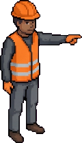
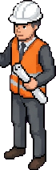

Cats Track is an AI site assistant. A foreman says what happened; the app sorts it into one card, re-plans the shared two-week plan and drafts the VOB/B letter. The site manager approves with one tap.
The app has three places: Today, the big Record button and the Plan. Everything that waits for you lands in one list.

01 · SPEAKTap the mic, say what happened, stop. Or attach a photo, PDF, contract, meeting minutes or a pasted email.

02 · SORTOpen-source AI fills in what, where, since when and why, plus the next steps with who and when. At most one question.
Re-plans, plan changes, VOB/B letters, updates to send and coming-up risks, in one list. One tap each.
The real app with a synthetic site: Wohnanlage Lindenhof, Haus 2, five companies, 14 tasks.
German or English dictation; sorting starts by itself when you stop talking. Photos are described by an open vision model.
A stoppage shows its knock-on effect and a proposal: add a crew, pull ready work forward. Milestones hold, idle hours drop.
Behinderungsanzeige, Mängelanzeige, Mehrkosten- and Bedenkenanzeige, daily report. Filled only from what was recorded.
Personal WhatsApp, SMS or email drafts: action for whoever has to act, FYI for whoever is only affected.
A shared two-week timeline and a site plan by section and level, with pins for problems, blocked and overdue work.
The site manager sees everything. Each foreman sees their own tasks plus the ones that depend on them.
Prototype with synthetic data. Drafts are a drafting aid, not legal advice.